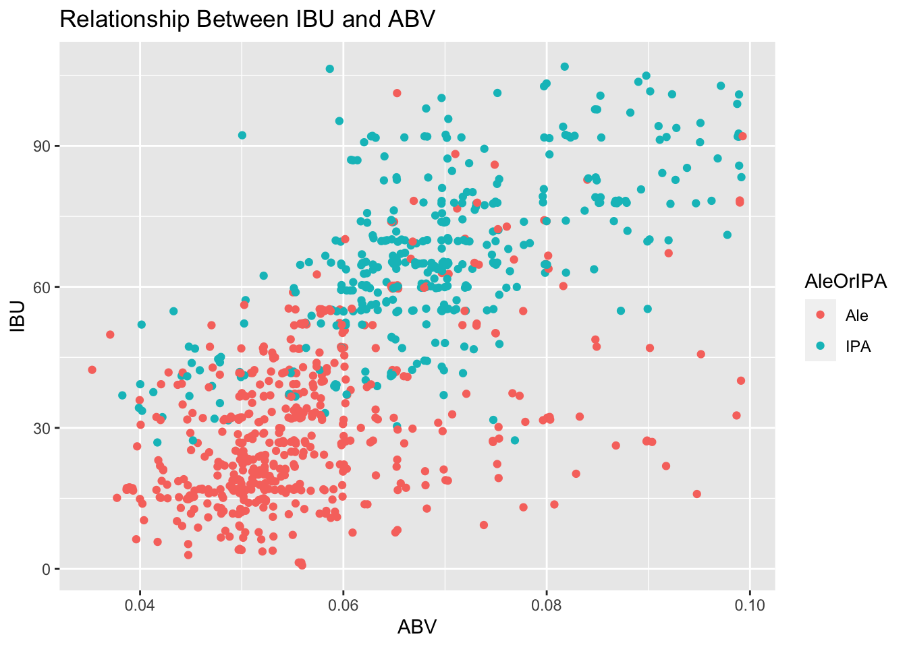

Mueller_Thibeaux_Case Study
Thibeaux
2023-02-20
Introduction: Welcome to Nicholas Mueller and Alex Thibeaux case study.Through our code you will visually see insights on the distribution of beers and breweries among every state. Along with interesting finds of different styled beers, IBUs, ABVs, and more. We have also provided alternative options to missing data so that we are able to get the full potential out of our data set. If you have any question feel free to reach out.
library(maps)
library(ggplot2)
library(ggthemes)
library(dplyr)
library(stringr)
library(class)
library(caret)
library(mice)
library(RColorBrewer)
library(tidyr)These libraries will help us plot and manipulate our data so that we can visually present appropriate findings.
beers <- read.csv('https://github.com/athibeaux/MSDS-DDS/raw/main/Mueller%20Thibeaux%20Case%20Study/Beers.csv', header = TRUE, fill = TRUE)
breweries <- read.csv('https://github.com/athibeaux/MSDS-DDS/raw/main/Mueller%20Thibeaux%20Case%20Study/Breweries.csv', header = TRUE, fill = TRUE)
merged <- merge(beers, breweries, by.x = "Brewery_id", by.y = "Brew_ID")We took the beers and breweries data set and merged it into one data set so that we can use the entirety of the data to provide findings.
- How many breweries are present in each state?
breweries_by_state <- breweries %>%
group_by(State) %>%
summarize(Count = n())%>%
arrange(desc(Count))
ggplot(breweries_by_state, aes(x = reorder(State, Count), y = Count)) +
geom_bar(stat = "identity", fill = "blue") +
xlab("State") + ylab("Number of Breweries") +
ggtitle("Number of Breweries in Each State") +
theme_wsj() + theme(plot.title = element_text(size = 14, face = "bold"),
axis.text.x = element_text(angle = 90, hjust = 1))+
geom_text(aes(label = Count), vjust = -0.5) We grouped the breweries by state and summarized the number of breweries
in each states. Then we were able to plot a bar graph that shows each
state and its corresponding number of breweries in descending order.
We grouped the breweries by state and summarized the number of breweries
in each states. Then we were able to plot a bar graph that shows each
state and its corresponding number of breweries in descending order.
- Merge beer data with the breweries data. Print the first 6 observations and the last six observations to check the merged file. (RMD only, this does not need to be included in the presentation or the deck.)
head(merged, 6)## Brewery_id Name.x Beer_ID ABV IBU Style Ounces Name.y
## 1 1 Get Together 2692 0.045 50 American IPA 16 NorthGate Brewing
## 2 1 Maggie's Leap 2691 0.049 26 Milk / Sweet Stout 16 NorthGate Brewing
## 3 1 Wall's End 2690 0.048 19 English Brown Ale 16 NorthGate Brewing
## 4 1 Pumpion 2689 0.060 38 Pumpkin Ale 16 NorthGate Brewing
## 5 1 Stronghold 2688 0.060 25 American Porter 16 NorthGate Brewing
## 6 1 Parapet ESB 2687 0.056 47 Extra Special / Strong Bitter (ESB) 16 NorthGate Brewing
## City State
## 1 Minneapolis MN
## 2 Minneapolis MN
## 3 Minneapolis MN
## 4 Minneapolis MN
## 5 Minneapolis MN
## 6 Minneapolis MNtail(merged, 6)## Brewery_id Name.x Beer_ID ABV IBU Style Ounces
## 2405 556 Pilsner Ukiah 98 0.055 NA German Pilsener 12
## 2406 557 Heinnieweisse Weissebier 52 0.049 NA Hefeweizen 12
## 2407 557 Snapperhead IPA 51 0.068 NA American IPA 12
## 2408 557 Moo Thunder Stout 50 0.049 NA Milk / Sweet Stout 12
## 2409 557 Porkslap Pale Ale 49 0.043 NA American Pale Ale (APA) 12
## 2410 558 Urban Wilderness Pale Ale 30 0.049 NA English Pale Ale 12
## Name.y City State
## 2405 Ukiah Brewing Company Ukiah CA
## 2406 Butternuts Beer and Ale Garrattsville NY
## 2407 Butternuts Beer and Ale Garrattsville NY
## 2408 Butternuts Beer and Ale Garrattsville NY
## 2409 Butternuts Beer and Ale Garrattsville NY
## 2410 Sleeping Lady Brewing Company Anchorage AKWe are able to see the top 6 and last 6 values in each column.
- Address the missing values in each column.
# Load the mice package
library(mice)
# Convert IBU variable to factor
merged$IBU <- as.factor(merged$IBU)
# Create a mice imputation object with predictive mean matching
imp <- mice(merged, method = "pmm")##
## iter imp variable
## 1 1 ABV IBU
## 1 2 ABV IBU
## 1 3 ABV IBU
## 1 4 ABV IBU
## 1 5 ABV IBU
## 2 1 ABV IBU
## 2 2 ABV IBU
## 2 3 ABV IBU
## 2 4 ABV IBU
## 2 5 ABV IBU
## 3 1 ABV IBU
## 3 2 ABV IBU
## 3 3 ABV IBU
## 3 4 ABV IBU
## 3 5 ABV IBU
## 4 1 ABV IBU
## 4 2 ABV IBU
## 4 3 ABV IBU
## 4 4 ABV IBU
## 4 5 ABV IBU
## 5 1 ABV IBU
## 5 2 ABV IBU
## 5 3 ABV IBU
## 5 4 ABV IBU
## 5 5 ABV IBU## Warning: Number of logged events: 5# Generate 5 imputed datasets
imputed_data <- complete(imp, 5)
# Combine the imputed datasets into a single data frame
combined_data <- complete(imp, action = "long")
# Use the complete data for subsequent analysis
imputed_beers <- combined_data[combined_data$".imp" == 5, ]
Imputed_IBU=imputed_beers$IBU
merged_Imputed <- cbind(merged, Imputed_IBU)We used a library function call multivariate imputation via chained equation or mice for short. This is a type of regression model which uses a predictive mean matching technique that uses values like style, ABV, and other columns in the data set to predict missing values like IBU.
- Compute the median alcohol content and international bitterness unit for each state. Plot a bar chart to compare.
# Since our imputation of the data converted the continues variables into factors, we will now change them back to numeric in order to run statistical analysis on them.
merged_Imputed$IBU=as.numeric(merged_Imputed$IBU)
merged_Imputed$ABV=as.numeric(merged_Imputed$ABV)
merged_Imputed$Imputed_IBU=as.numeric(merged_Imputed$Imputed_IBU)
# Create a new dataframe that has the Median ABV and IBU by state
merged3<- merged_Imputed %>%
group_by(State) %>%
summarize(median_abv = median(ABV, na.rm = TRUE),
median_ibu = median(IBU, na.rm = TRUE),
median_imputedIBU= median(Imputed_IBU, na.rm=TRUE))
# Bar Chart of Median ABV by State
ggplot(merged3, aes(x = reorder(State, median_abv), y = median_abv)) +
geom_bar(stat = "identity", fill = "brown") +
xlab("State") + ylab("Median Alcohol Content") +
ggtitle("Median Alcohol Content by State") +
theme_economist() + theme(plot.title = element_text(size = 14, face = "bold"),
axis.text.x = element_text(angle = 90, hjust = 1))
# Bar Chart of Median IBU by State (raw data)
ggplot(merged3, aes(x = reorder(State, median_ibu), y = median_ibu)) +
geom_bar(stat = "identity", fill = "red") +
xlab("State") + ylab("Median IBU") +
ggtitle("Median IBU by State") +
theme_economist() +
geom_text(aes(label = median_ibu), position = position_nudge(y = 1), size = 2) +
theme(plot.title = element_text(size = 14, face = "bold"),
axis.text.x = element_text(angle = 90, hjust = 1))## Warning: Removed 1 rows containing missing values (`position_stack()`).## Warning: Removed 1 rows containing missing values (`geom_text()`).
# Bar Chart of Median IBU by State (imputed data)
ggplot(merged3, aes(x = reorder(State, median_imputedIBU), y = median_imputedIBU)) +
geom_bar(stat = "identity", fill = "blue") +
xlab("State") + ylab("Median Imputed IBU") +
ggtitle("Median Imputed IBU by State") +
theme_economist() + geom_text(aes(label = median_imputedIBU), position = position_nudge(y = 1), size = 2) +
theme(plot.title = element_text(size = 14, face = "bold"),
axis.text.x = element_text(angle = 90, hjust = 1)) For question 4 we used the merged data set with the imputed IBU column
and the original IBU column to plot a bar chart of median IBU per state
along with a bar chart of median ABV per state.
For question 4 we used the merged data set with the imputed IBU column
and the original IBU column to plot a bar chart of median IBU per state
along with a bar chart of median ABV per state.
- Which state has the maximum alcoholic (ABV) beer? Which state has the most bitter (IBU) beer?
# Bar chart of Top 5 Highest ABVs
merged_Imputed %>%
group_by(State,Name.x) %>%
arrange(desc(ABV))%>%
head(5)%>%
ggplot(aes(x=reorder(Name.x,ABV),y=ABV, fill=State)) +
xlab("") + geom_col() + coord_flip() + theme_economist() +
ggtitle("Top 5 Highest ABVs") +
geom_text(aes(label = ABV), position = position_nudge(y = -.01))
# Bar chart of Top 5 Highest IBUs (Non-Imputed Data)
merged_Imputed %>%
group_by(State,Name.x) %>%
arrange(desc(IBU))%>%
head(5)%>%
ggplot(aes(x=reorder(Name.x,Imputed_IBU),y=Imputed_IBU, fill=State)) +
xlab("") + ggtitle("Top 5 Highest IBUs using Non-Imputed Data") +
geom_col() + coord_flip() + theme_economist() +
geom_text(aes(label = IBU), position = position_nudge(y = -5))
# Bar chart of Top 5 Highest IBUs (Imputed Data)
merged_Imputed %>%
group_by(State,Name.x) %>%
arrange(desc(IBU))%>%
head(5)%>%
ggplot(aes(x=reorder(Name.x,Imputed_IBU),y=Imputed_IBU, fill=State)) +
xlab("") + ylab("IBU") + ggtitle("Top 5 Highest IBUs using Imputed Data") +
geom_col() + coord_flip() + theme_economist() +
geom_text(aes(label = Imputed_IBU), position = position_nudge(y = -5)) For question 5 we took the complete data set and grouped it by state.
Once grouped by state we were able to filter out the top 5 highest IBU
states and ABV states and displayed 2 different bar graphs, one with the
top 5 highest IBUs and then the other top 5 highest ABVs.
For question 5 we took the complete data set and grouped it by state.
Once grouped by state we were able to filter out the top 5 highest IBU
states and ABV states and displayed 2 different bar graphs, one with the
top 5 highest IBUs and then the other top 5 highest ABVs.
- Comment on the summary statistics and distribution of the ABV variable.
# View Summary Statistics and Mean
summary(merged$ABV)## Min. 1st Qu. Median Mean 3rd Qu. Max. NA's
## 0.00100 0.05000 0.05600 0.05977 0.06700 0.12800 62mean(!is.na(merged$ABV))## [1] 0.9742739# Create Histogram and Boxplot
merged %>% ggplot() + geom_histogram(aes(x = ABV)) +
theme_economist() + ggtitle("Distribution of ABV Variable")## `stat_bin()` using `bins = 30`. Pick better value with `binwidth`.## Warning: Removed 62 rows containing non-finite values (`stat_bin()`).
merged %>% ggplot() + geom_boxplot(aes(x = ABV)) + theme_economist() + ggtitle("Distribution of ABV Variable")## Warning: Removed 62 rows containing non-finite values (`stat_boxplot()`). For question 6 we used a summary tool in Rstudio to be able to determine
the ABV minimum, average, and maximum content among the 50 states. Once
retrieving the statistics we decided to plot a histogram and box plot to
visually display the findings using ggplot.
For question 6 we used a summary tool in Rstudio to be able to determine
the ABV minimum, average, and maximum content among the 50 states. Once
retrieving the statistics we decided to plot a histogram and box plot to
visually display the findings using ggplot.
- Is there an apparent relationship between the bitterness of the beer and its alcoholic content? Draw a scatter plot. Make your best judgment of a relationship and EXPLAIN your answer.
#Labeled the breaks in IBU from mild to extremely bitter
merged_Imputed$Bitterness <- cut(as.numeric(merged$IBU), breaks=c(0, 20, 40, 60, 80, 140), labels=c('Mild', 'Moderately Bitter', 'Fairly Bitter', 'Very Bitter', 'Extremely Bitter'))
# Non-imputed Data
merged_Imputed %>% ggplot() + geom_jitter(aes(x = ABV, y = IBU, color=Bitterness))+ggtitle("Relationship Between IBU and ABV") + theme_pander()## Warning: Removed 1005 rows containing missing values (`geom_point()`).
#Labeled the breaks in Imputed IBU from mild to extremely bitter
merged_Imputed$Bitterness_Imputed <- cut(as.numeric(merged_Imputed$Imputed_IBU), breaks=c(0, 20, 40, 60, 80, 140), labels=c('Mild', 'Moderately Bitter', 'Fairly Bitter', 'Very Bitter', 'Extremely Bitter'))
# Imputed Data
merged_Imputed %>% ggplot() + geom_jitter(aes(x = ABV, y = Imputed_IBU, color=Bitterness_Imputed))+ylab("Imputed IBU")+ggtitle("Relationship Between Imputed IBU and ABV")+ theme_pander()## Warning: Removed 62 rows containing missing values (`geom_point()`). For question 7 we used the scatter plot method in R studio to show the
relationship between IBU and ABV. We displayed one scatter plot with the
original data and the other scatter plot with the imputed IBU.
For question 7 we used the scatter plot method in R studio to show the
relationship between IBU and ABV. We displayed one scatter plot with the
original data and the other scatter plot with the imputed IBU.
- Budweiser would also like to investigate the difference with respect to IBU and ABV between IPAs (India Pale Ales) and other types of Ale (any beer with “Ale” in its name other than IPA). You decide to use KNN classification to investigate this relationship. Provide statistical evidence one way or the other. You can of course assume your audience is comfortable with percentages … KNN is very easy to understand conceptually.
# Find IPA and Ale Rows
sum(str_count(merged$Style,"IPA"))## [1] 571sum(str_count(merged$Style,"Ale"))## [1] 976merged$IPA <- as.factor(ifelse(grepl("IPA", merged$Style), TRUE, FALSE))
merged$Ale <- as.factor(ifelse(grepl("Ale", merged$Style) & merged$IPA == FALSE, TRUE, FALSE))
summary(merged)## Brewery_id Name.x Beer_ID ABV IBU Style
## Min. : 1.0 Length:2410 Min. : 1.0 Min. :0.00100 20 : 82 Length:2410
## 1st Qu.: 94.0 Class :character 1st Qu.: 808.2 1st Qu.:0.05000 35 : 60 Class :character
## Median :206.0 Mode :character Median :1453.5 Median :0.05600 65 : 54 Mode :character
## Mean :232.7 Mean :1431.1 Mean :0.05977 30 : 53
## 3rd Qu.:367.0 3rd Qu.:2075.8 3rd Qu.:0.06700 70 : 48
## Max. :558.0 Max. :2692.0 Max. :0.12800 (Other):1108
## NA's :62 NA's :1005
## Ounces Name.y City State IPA Ale
## Min. : 8.40 Length:2410 Length:2410 Length:2410 FALSE:1839 FALSE:1447
## 1st Qu.:12.00 Class :character Class :character Class :character TRUE : 571 TRUE : 963
## Median :12.00 Mode :character Mode :character Mode :character
## Mean :13.59
## 3rd Qu.:16.00
## Max. :32.00
## alesNA <- filter(merged, merged$IPA == TRUE | merged$Ale == TRUE)
ales <- alesNA[complete.cases(alesNA),]
ales$AleOrIPA <- as.factor(ifelse(ales$Ale == TRUE, "Ale", "IPA"))
summary(ales)## Brewery_id Name.x Beer_ID ABV IBU Style
## Min. : 1.00 Length:944 Min. : 1.0 Min. :0.03500 20 : 54 Length:944
## 1st Qu.: 99.75 Class :character 1st Qu.: 786.8 1st Qu.:0.05200 65 : 51 Class :character
## Median :202.00 Mode :character Median :1457.5 Median :0.06000 70 : 48 Mode :character
## Mean :226.40 Mean :1418.1 Mean :0.06178 35 : 41
## 3rd Qu.:345.25 3rd Qu.:2068.2 3rd Qu.:0.07000 60 : 41
## Max. :547.00 Max. :2692.0 Max. :0.09900 30 : 32
## (Other):677
## Ounces Name.y City State IPA Ale AleOrIPA
## Min. :12.00 Length:944 Length:944 Length:944 FALSE:552 FALSE:392 Ale:552
## 1st Qu.:12.00 Class :character Class :character Class :character TRUE :392 TRUE :552 IPA:392
## Median :12.00 Mode :character Mode :character Mode :character
## Mean :13.51
## 3rd Qu.:16.00
## Max. :32.00
## # Display Scatterplot of dataset with only IPAs and Ales
ales %>% ggplot() + geom_jitter(aes(x = as.numeric(ABV), y = as.numeric(IBU), color=AleOrIPA))+xlab("ABV") + ylab("IBU")+ggtitle("Relationship Between IBU and ABV") We were able to filter the IPA and ale from the original data set making sure that if the style had both IPA and Ale in the name it would be classified as IPA.
KNN Model
# KNN
iterations = 100
splitPerc = .70
masterAcc = matrix(nrow = iterations)
for(j in 1:iterations)
{
accs = data.frame(accuracy = numeric(90), k = numeric(90))
trainIndices = sample(1:dim(ales)[1],round(splitPerc * dim(ales)[1]))
train = ales[trainIndices,]
test = ales[-trainIndices,]
classifications = knn(train[,c(4,5)],test[,c(4,5)],train$AleOrIPA, prob = TRUE, k = 30)
table(classifications,test$AleOrIPA)
CMknn = confusionMatrix(table(classifications,test$AleOrIPA))
masterAcc[j] = CMknn$overall[1]
}
MeanAcc = colMeans(masterAcc)
MeanAcc## [1] 0.8427562CMknn$byClass[1]## Sensitivity
## 0.8493976CMknn$byClass[2]## Specificity
## 0.8034188We used the k-nearest-neighbor model to show that we are able to predict wehter a beer is an IPA or an Ale based on the IBU and ABV statistics or numbers for that beer. The KNN model looks at the scatter plot of the relationship between IBU and ABV and selects the nearest neighbors (K being how many nearest neighbors you want) and depending on what the majority nearest to the point being evaluated will be the predicted category. We used K=30 because of how large the data set is.
The KNN uses a train and a test set to estimate how accurate the model will be. Since we have the correct catigories in the test set we are able to see how accurate the predication model is at predication wether the beer is Ale or IPA. The KNN model will run different train and tests sets every time, however majority of the time the accuracy lies between 80% and 90%, sensitivity between 80% and 90%, and specificity between 75% and 85%.
In addition, while you have decided to use KNN to investigate this relationship (KNN is required) you may also feel free to supplement your response to this question with any other methods or techniques you have learned. Creativity and alternative solutions are always encouraged.
- Knock their socks off! Find one other useful inference from the data that you feel Budweiser may be able to find value in. You must convince them why it is important and back up your conviction with appropriate statistical evidence.
library(tidyr)
#Labeled the breaks in IBU from mild to extremely bitter
merged_Imputed$Bitterness <- cut(as.numeric(merged$IBU), breaks=c(0, 20, 40, 60, 80, 140), labels=c('Mild', 'Moderately Bitter', 'Fairly Bitter', 'Very Bitter', 'Extremely Bitter'))
bitterness_count <- merged_Imputed %>%
drop_na(Bitterness) %>%
group_by(Bitterness) %>%
summarize(Count = n()) %>%
arrange(desc(Count))
# define colors for each bitterness value
colors <- brewer.pal(length(unique(bitterness_count$Bitterness)), "Set1")
#plot a bar graph to show the count of each level of bitterness
ggplot(bitterness_count, aes(x = reorder(Bitterness, Count), y = Count, fill = Bitterness)) +
geom_bar(stat = "identity") +
xlab("Bitterness") + ylab("Count") +
ggtitle("Count of Bitterness") +
theme_wsj() +
theme(plot.title = element_text(size = 14, face = "bold"),
axis.text.x = element_text(angle = 45, hjust = 1)) +
geom_text(aes(label = Count), vjust = -0.5) +
scale_fill_manual(values = setNames(colors, unique(bitterness_count$Bitterness))) For question 9 we used the bitterness levels from mild to extremely
bitter and displayed the count of each level with the given data.
For question 9 we used the bitterness levels from mild to extremely
bitter and displayed the count of each level with the given data.
We also used ChatGPT to form each level of bitterness and ranked them accordingly.
According to ChatGPT:
0-20 IBUs: Mild, low bitterness beers such as Scottish ales, brown ales, and cream ales. 20-40 IBUs: Moderately bitter beers such as English bitters, American amber ales, and most lagers. 40-60 IBUs: Fairly bitter beers such as IPAs, American pale ales, and most Belgian ales. 60-80 IBUs: Very bitter beers such as double IPAs, imperial stouts, and some barleywines. 80+ IBUs: Extremely bitter beers such as triple IPAs and some imperial stouts.
Why you should care! Since we did not have any sales data, that could be the next exploratory data analysis. Now that we know where the market is saturated we can take a look at the potential for exploring new markets that might be untapped by Budweiser. As we review the bar chart of the different levels we can see majority of beers are moderately bitter to mild(59% of beers), however only 6% of beers are extremely bitter. Therefore, we could find a lot of value exploring extremely bitter beers.
Conclusion: In the end we were able to retrieve all sorts of information. We were able to visually display the number of breweries per state, how each states differed in IBU and ABV, and what the average values of IBU and ABV were in each states. We also proceeded to displayed how IBU and ABV correlated with each other and how when the score of IBU increased so did the ABV.Then to round everything off we used the KNN model and MICE model to predict missing values and find the accuracy, specificity, and sensitivity among the data we were given.
Thank you for your time, we enjoyed working with this data and look forward to where our partnership will go.